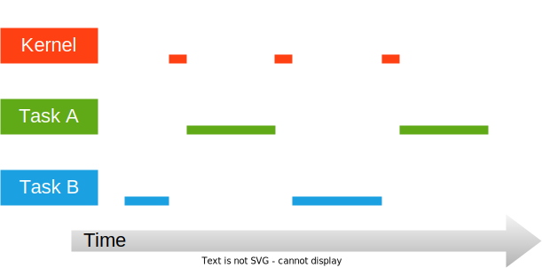
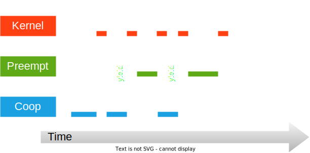

Realtime operating systems
Scheduling - Round Robin

Scheduling - Preempt / Coop

Zephyr Kernel
“The Zephyr kernel lies at the heart of every Zephyr application.
It provides a low footprint, high performance, multi-threaded execution environment
with a rich set of available features. The rest of the Zephyr ecosystem, including
device drivers, networking stack, and application-specific code, uses the kernel's
features to create a complete application.”
Zephyr Documentation
Zephyr threads
“A thread is a kernel object that is
used for application processing
that is too lengthy or to complex
to be performed by an ISR”
Zephyr Documentation
- Any number of threads can be defined (limited by RAM)
- Important parts of a thread
- Thread ID
- Stack area (private to each thread)
- Entry point function (3 arguments)
- Scheduling priority
- Start Delay
- (Execution mode)
Zephyr thread anatomy
void thread (void * arg1, void * arg2, void * arg3)
{
/* Thread init */
for(;;)
{
/* Thread body */
}
}
Spawning a thread (dynamically)
#define MY_STACK_SIZE 500
#define MY_PRIORITY 5
extern void my_entry_point(void *, void *, void *);
K_THREAD_STACK_DEFINE(my_stack_area, MY_STACK_SIZE);
struct k_thread my_thread_data;
/* in main () */
k_tid_t my_tid = k_thread_create(&my_thread_data, my_stack_area,
K_THREAD_STACK_SIZEOF(my_stack_area),
my_entry_point,
NULL, NULL, NULL,
MY_PRIORITY, 0, K_NO_WAIT);
Spawning a thread (statically)
#define MY_STACK_SIZE 500
#define MY_PRIORITY 5
extern void my_entry_point(void *, void *, void *);
K_THREAD_DEFINE(my_tid, MY_STACK_SIZE,
my_entry_point, NULL, NULL, NULL,
MY_PRIORITY, 0, 0);
Terminating a thread
void my_entry_point(void * arg1, void * arg2, void * arg3)
{
for(;;)
{
if (/* some condition */) { return; }
/* ... */
}
/* thread terminates here */
}
- Usually, threads run forever
- Use with caution!
- No data is released automatically at termination!
Inter-task communication
- Tasks often need to communicate / exchange data
- Same problem we have already seen with ISR - main communication
- Two general paradigms
- Shared memory
- Messsage passing
Shared memory
- Tasks share memory
- global / static variables
- same heap location
- Susceptible to common pitfalls
- Access needs to be carefully managed
Example - data race
int sharedData;
void task1 (void* a1, void* a2, void* a3)
{
for(int i = 0; i < 1000000; i++)
{
sharedData = sharedData + 1;
}
k_sleep(K_FOREVER);
}
void task2 (void* a1, void* a2, void* a3)
{
for(int i = 0; i < 1000000; i++)
{
sharedData = sharedData + 1;
}
k_sleep(K_FOREVER);
}
Solutions
- Use cooperative tasks (i.e. tasks that cannot be preemtped)
- Must make sure that tasks aborts or sleeps forever
- Lock interrupts before accessing shared data
- Potentially increases response time of the system to important events
- Use a Mutex
Mutex
- Allows multiple threads to safely share both hardware and software resources
- Ensures mutually exclusive access to a resource
- General idea
- We request (lock) a mutex before entering a critical section
- We return (unlock) a mutex when we exit the critical section